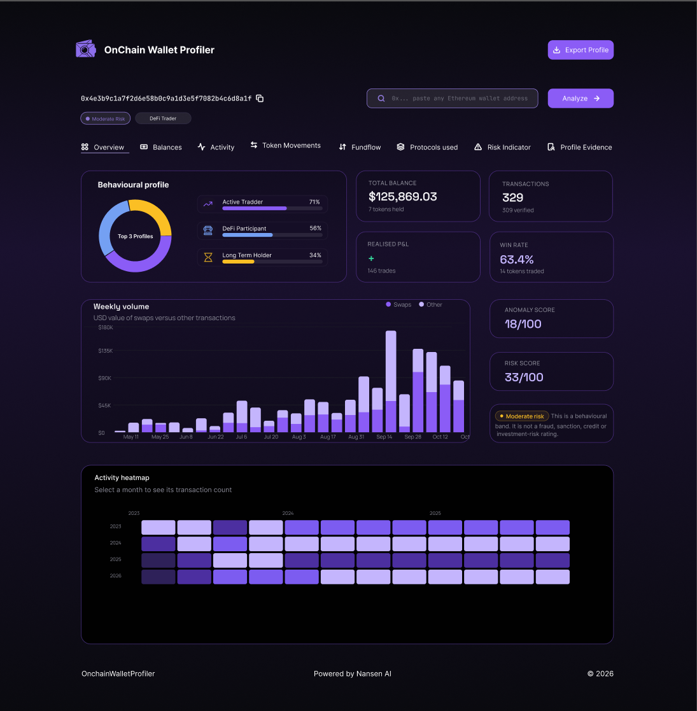

Documentation & Quality Assurance · Ongoing
Onchain Wallet Profiler
Design focus · reading Ethereum wallet activity
Problem and audience
Someone reviewing a wallet needs to understand its activity without manually reconstructing a transaction history. The primary question is whether a reviewer can trace a conclusion back to the transfers and protocol interactions that support it.
Research questions
Ask reviewers to walk through a wallet they already understand, then note where they switch tools or lose context. Compare reviewers' interpretations of sparse histories and ambiguous counterparties.
Ideation and design rationale
The project combines Nansen API data, visualizations, wallet behavior categories, and risk indicators. A summary gives reviewers a starting point and transaction detail lets them inspect the evidence. Any risk label needs a clear explanation of which signals contributed and where the data is incomplete.
Prototype walkthrough
The proposed walkthrough follows one task through the project.
- Enter a wallet address
- Scan its behavior summary
- Follow a fund flow
- Inspect the underlying transaction

Usability test plan
Ask reviewers to identify an outgoing transfer and explain why a risk indicator appeared. Record correct interpretations, time to locate evidence, and any confusion between limited data and low risk.
Proposed iteration
If reviewers treat a risk label as definitive, add the contributing signals and data limitations beside it. Rerun the interpretation task with sparse and busy wallets.